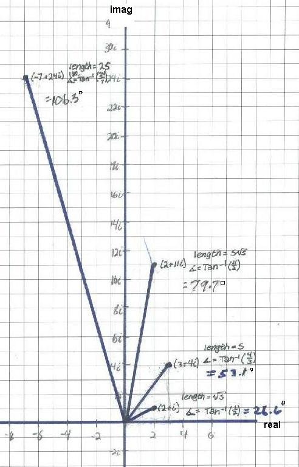
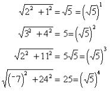
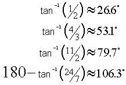
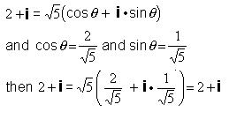
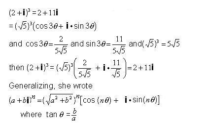

Ana E., a 10th grader, finds patterns in the graphs of (2 + i)n
Don asked Ana to graph (2 + i), (2 + i)2, (2 + i)3, (2 + i)4 on the complex or Argand plane. She did that easily. Then he asked her to get the lengths of each vector to the point.

Using the pythagorean theorem, Ana found the lengths to be:

and saw the pattern that the original length is squared, cubed and raised to the 4th power to get the new ones. Ana found the angles between the vector and the horizontal (+real) axis to be:

[Note: tan-1 (1/2) means "the angle whose tangent is 1/2"]. She saw the pattern here was that the angles are multiplied by the exponent. So the angle for (2 + i)3 is 3*tan-1 (1/2).
Don showed Ana that

Ana wrote this one:

Next possible questions: what is (2 + i)1/4 ? and what is eix in terms of cos and sin?
To
other discoveries
To
order
Don's materials
Mathman home